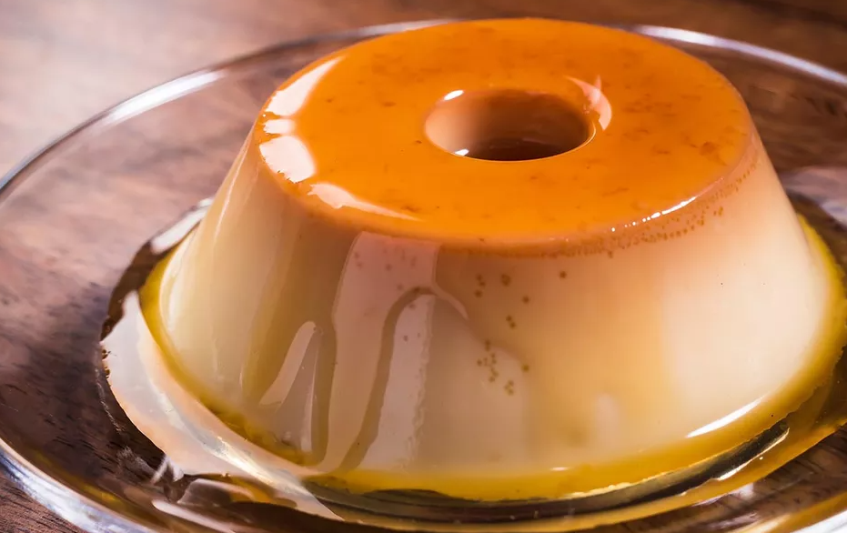

Pão de queijo

Ingredientes:
150ml de óleo,
150ml de água,
150ml de leite,
500g de polvilho azedo,
13g de sal (1 csb),
3 ovos,
200g de queijo meia cura ralado,
25g de queijo parmesão ralado.
Modo de fazer:
Em uma panela coloque o óleo, a água, o leite e leve ao fogo para ferver.
Coloque o polvilho e o sal em uma tigela grande.
Assim que o líquido estiver fervendo, despeje-o sobre o polvilho e misture bem com uma colher de pau. Deixe a mistura amornar. (veja dicas)
Adicione os ovos e misture com a mão para envolver bem os ingredientes.
Acrescente os dois queijos e misture bem com a mão.
Lave as mãos e comece a modelar os pães, se a massa estiver grudando, unte as mãos com óleo. Cada pão de queijo ficou com 34g.
Coloque em uma forma e leve para assar em forno preaquecido a 180°C por aproximadamente 35 minutos.
Churros

Ingredientes
2 xícaras de chá de água,
1 pitada de sal,
2 colheres de chá de margarina ou manteiga,
2 xícaras de chá de farinha de trigo,
600 mililitros de óleo de soja,
Açúcar a gosto para polvilhar,
Canela a gosto para polvilhar.
Modo de Preparo
Em uma panela, coloque 2 xícaras de chá de água, 1 pitada de sal e 2 colheres de chá de margarina. Deixe ferver.
Em seguida, adicione 2 xícaras de chá de farinha de trigo e misture rapidamente até formar uma massa homogênea.
Depois, coloque a massa ainda morna em um modelador de churros.
Em uma panela, coloque 600 mililitros de óleo de soja e deixe aquecer.
Corte o churros direto no óleo quente e deixe dourar. Escorra e coloque sobre papel-toalha.
Em um recipiente, misture açúcar e canela a gosto. Em seguida, passe os churros na mistura e sirva.
Pudim
INGREDIENTES
Calda:
1 xícara (chá) de açúcar,
meia xícara (chá) de água quente,
Pudim:
1 Leite MOÇA® (lata ou caixinha) 395 g,
2 medidas (da lata) de Leite Líquido NINHO® Forti+ Integral (790 ml),
3 ovos.
Modo de Preparo
Calda:
1. Em uma panela de fundo largo, derreta o açúcar até ficar dourado.
2. Junte a água quente e mexa com uma colher.
3. Deixe ferver até dissolver os torrões de açúcar e a calda engrossar.
4. Forre com a calda uma forma com furo central (19 cm de diâmetro) e reserve.
Pudim
5. Em um liquidificador, bata todos os ingredientes do pudim e despeje na forma reservada.
6. Cubra com papel-alumínio e leve ao forno médio (180°C), em banho-maria, por cerca de 1 hora e 30 minutos.
7. Depois de frio, leve para gelar por cerca de 6 horas.
8. Desenforme e sirva a seguir.